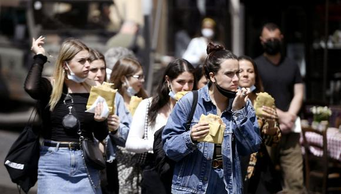
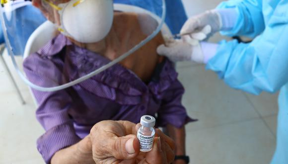

NOTICIAS
Coronavirus: Italia retrasa el toque de queda y lo eliminará completamente el 21 de junio
El Ejecutivo de Mario Draghi reunió hoy a su comité de expertos y científicos para estudiar estas medidas dirigidas a fomentar el turismo veraniego y la vida social aprovechando la mejora de los datos epidemiológicos de las últimas semanas en todo el país El final de esta limitación será gradual, pese a las presiones de la derecha por quitarlo inmediatamente, y se eliminará del todo el 21 de junio. Por el momento en los próximos días se retrasará hasta las 23.00 locales (actualmente está fijado a las 22.00). El Consejo de Ministros se reúne esta tarde para recoger en un decreto este suavizamiento de las medidas anticontagio, que marcará el día en el que se empezará a retrasar el toque de queda. La idea de Draghi es ir abriendo paulatinamente el país al tiempo que se controla la evolución de la pandemia. Por eso, tras el primer retraso del toque de queda, a partir del próximo 7 de junio quedará fijado en la medianoche hasta su eliminación completa el día 21. La disminución de las limitaciones será efectiva en las regiones con riesgo leve de contagios, las conocidas como “zonas amarillas”, en estos momentos prácticamente todo el país. Seis regiones italianas además presentan una situación óptima y serán catalogadas como “zonas blancas”, en las que no existen restricciones, solo la obligación del uso de la mascarilla. Desde el 1 de junio entrarán en esta categoría Molise (centro), Cerdeña (este) y Friuli-Venecia-Julia (norte) y desde el día 7 se sumarán Abruzos (centro) y las norteñas Véneto y Liguria. El Consejo de Ministros examinará además otras muchas aperturas, como la posibilidad de consumir dentro de bares y restaurantes hasta las seis de la tarde (actualmente pueden abrir hasta las diez de la noche pero solo al aire libre), según avanzan los medios locales. Los centros comerciales, cerrados todavía durante el fin de semana, podrán reabrir ya desde el próximo sábado, y los gimnasios volverán a funcionar el lunes que viene, de acuerdo a las mismas fuentes. Italia se prepara así para reactivar los sectores que todavía permanecían pausados por las restricciones de la pandemia, así como su vida social de cara al verano y la temporada turística. Desde este lunes los viajeros procedentes de la Unión Europea, Gran Bretaña e Israel no necesitan hacer una cuarentena de cinco días y solo deben presentar un prueba negativa del COVID-19 o documentos que certifiquen la vacunación.
Vacuna COVID-19: más un millón 761 mil ya fueron inmunizados contra el coronavirus
Hasta el momento, Perú ha recibido un millón de vacunas de Sinopharm, dos millones 450 mil dosis de Pfizer y cerca de 400 mil del mecanismo Covax Facility (de Astrazeneca y Pfizer). Todas estas se aplican a personal de salud, adultos mayores, miembros de la Policía Nacional, Fuerzas Armadas y Bomberos, comprendidos en la primera fase del Plan Nacional de Vacunación. Tanto la vacuna de Sinopharm como la de Pfizer y la de Astrazeneca deben aplicarse en dos dosis para inmunizar a una persona contra el COVID-19. El proceso de vacunación en el Perú comenzó el martes 9 de febrero en los principales centros de salud en Lima y Callao. Una herramienta digital implementada por el Minsa permite acceder a la información del avance de la vacunación. Solo debes darle clic AQUÍ para revisar el número de personas vacunadas con ambas dosis o con una sola. El Gobierno estableció que el 16 de abril se inicie un nuevo plan de vacunación contra el COVID-19, con el objetivo de inmunizar primero a personas mayores de 80 años de Lima Metropolitana y Callao. Esta campaña se llevó a cabo hasta el 25 de dicho mes en 11 centros de inmunización distribuidos en 22 distritos de la capital. El Ministerio de Salud (Minsa) desarrolla actualmente una nueva jornada de vacunación contra el COVID-19 en adultos mayores de 70 años de distritos de Lima y Callao, para que acudan a más de 50 centros de vacunación.